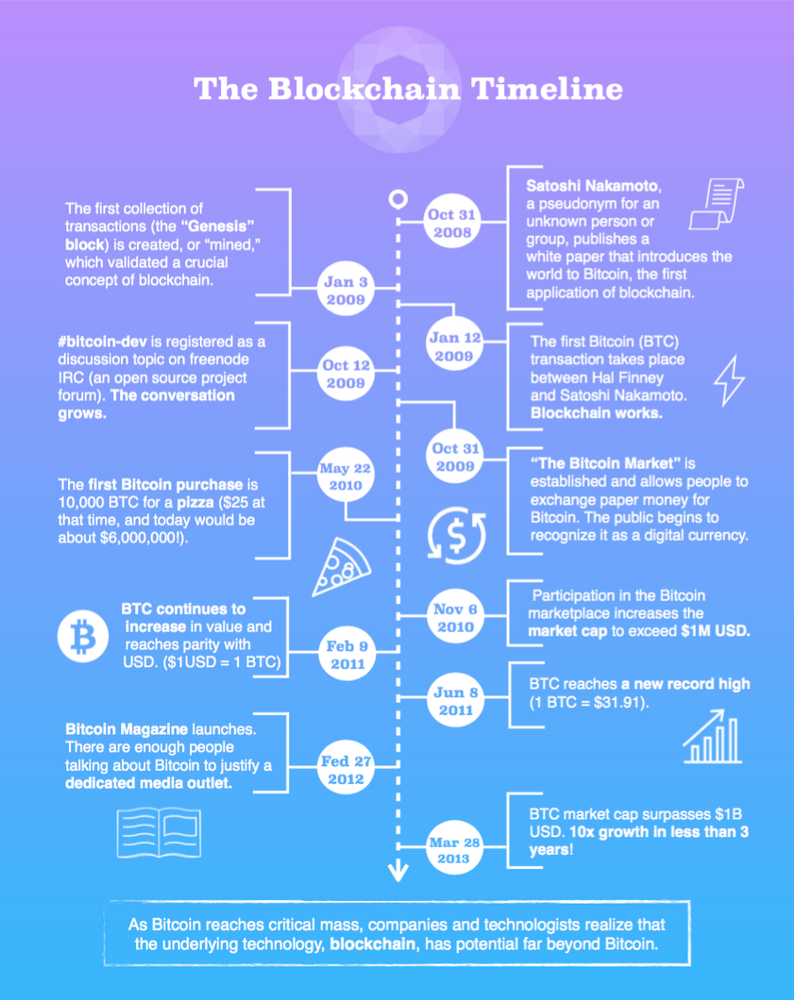
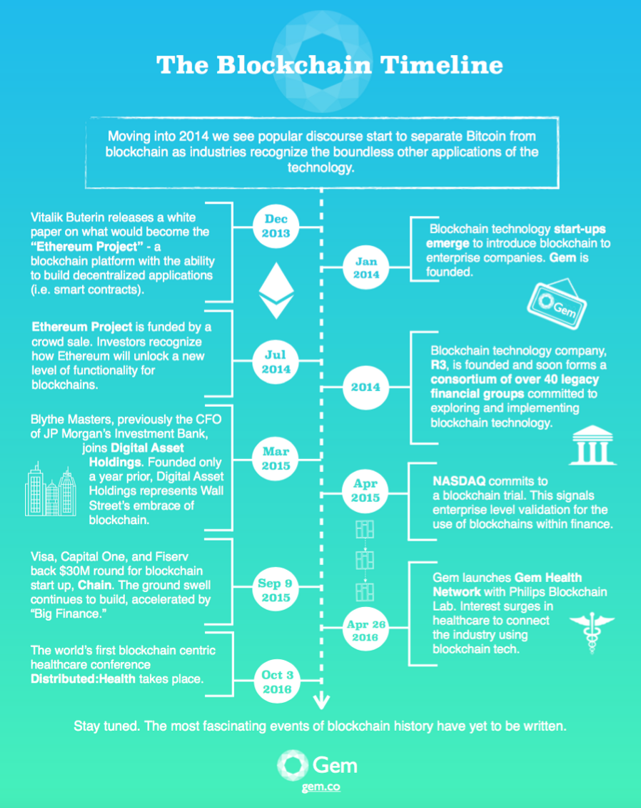
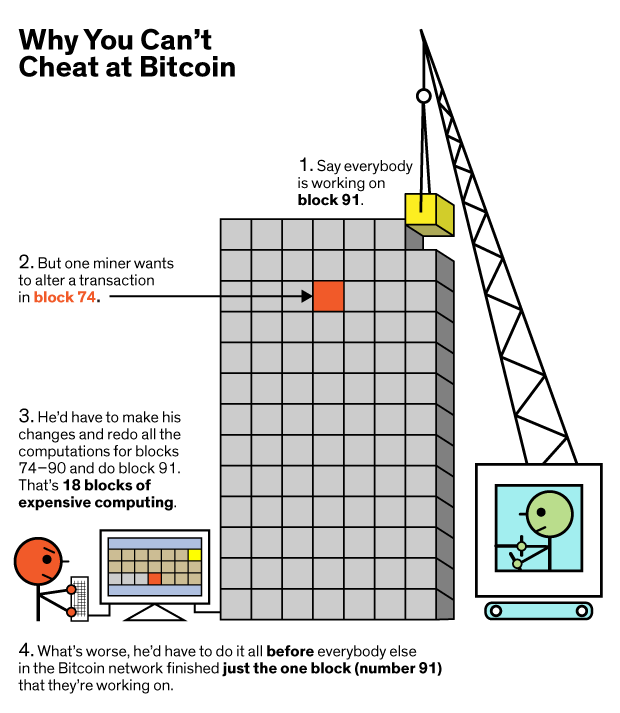

<!DOCTYPE html>
<head>
    <title>Codename: Spoiler</title>
    <meta charset="UTF-8">
	<link rel="stylesheet" href="styles.css"/>
</head>
<body>
        <div style="padding-top: 10%;"></div>
        <div style="text-align: center;">VIETNAM NATIONAL UNIVERSITY - HO CHI MINH CITY<br>
            HO CHI MINH UNIVERSITY OF TECHNOLOGY<br>
            FACULTY OF COMPUTER SCIENCE AND TECHNOLOGY</div>
        <p></p>
        <div style="text-align: left; padding-left: 30%; font-size: 16px">
            ASSIGNMENT 3 REPORT
        </div>
        <div style="text-align: left; padding-left: 30%; font-size: 24px;">
            The history, applicability, and potential development of
        </div>
        <h1 style="text-align: center; font-size: 42px">Blockchain</h1>
        <table style="padding-left: 24%; padding-top: 5%; font-size: 16px;">
            <tr>
                <td style="text-align: right;">Codename: Spoiler : </td>
                <td style="text-align: left;"> Nguyễn Hoàng - 1952255</td>
            </tr>
            <tr>
                <td></td>
                <td style="text-align: left;"> Nguyễn Chính Khôi - 1952793</td>
            </tr>
            <tr>
                <td></td>
                <td style="text-align: left;">Nguyễn Duy Thành - 1952456</td>
            </tr>
        </table>
        <div style="padding: 0% 15% 0%; text-align: justify;">
            <h2>1 A brief view on historical development</h2>
            <h3>1.1 The story begins</h3>
            The idea behind blockchain technology was described as early as 1991 when research scientists
Stuart Haber and Wakefield Scott Stornetta introduced a computationally realistic solution
for time-stamping digital documents in a way that they could not be backdated or tampered
with.[1][2]<br>
The system used a cryptographically secured chain of blocks to store the time-stamped documents.
In 1992, Merkle trees were incorporated to the design, improving its efficiency by allowing
several documents to be collected into one block. However, this technology went unutilized and
the patent became void in 2004, four years before the commencement of Bitcoin.[1][3]
            <h3>1.2 Reusable Proof of Work - The basis of all cryptocurrencies</h3>
            In 2004, computer scientist and cryptographic activist Hal Finney introduced a system called
Reusable Proof of Work - RPoW. The system worked by receiving a non-exchangeable or a nonfungible
Hashcash based proof of work token and in return created an RSA-signed token that
could then be transferred from person to person.<br>
RPoW solved the double spending problem by keeping the ownership of tokens registered on a
trusted central-server that was designed to allow users all over the world to verify its correctness
and integrity in real time.<br>
RPoW can be considered as an early prototype and a significant early step in the history of
cryptocurrency.
            <h3>1.3 Bitcoin - The most successful blockchain-based cryptocurrency</h3>
            In late 2008, a white paper introducing a decentralized peer-to-peer electronic cash system -
Bitcoin - was posted to a cryptography mailing list using the pseudonym Satoshi Nakamoto.[4]
Based on the Hashcash proof of work algorithm, but rather than using a hardware trusted
computing function like the RPoW, the double spending protection in Bitcoin was provided by a
decentralized peer-to-peer protocol for tracking and verifying the transactions. The bitcoin design
has inspired other applications, and blockchains that are readable by the public are widely used
by cryptocurrencies.[4][5]<br>
On the 3rd of January 2009, Bitcoin came to existence when the first bitcoin block was mined
by Satoshi Nakamoto, which had a reward of 50 bitcoins. The first recipient of Bitcoin was Hal
Finney, he received 10 bitcoins from Satoshi Nakamoto as the world's first bitcoin transaction
on 12 January 2009.
            <p></p>
            <h2>2 Ethereum - A new page for blockchain</h2>
            <h3>2.1 A spark of an idea</h3>
            In 2013, there was a proposal that blockchain technology be separated from the currency field
and its potential for other financial, interorganisational transactions be explored. Blockchain
2.0 was born, referring to applications beyond currency. With Blockchain 1.0, the value being
transferred on the network is in the form of a currency. With Blockchain 2.0, the value being
transferred is programmable transactions in the form of smart contracts. Smart contracts, are
programs that self-execute when certain conditions are met.[6][7] This notion is certainly not
new, but combining smart contracts with blockchain creates a powerful network of computing
resource that is decentralized and censorship-proof. In this interpretation, used as an example by
the Ethereum Foundation[8] or IBM[9], a smart contract is not necessarily related to the classical
concept of a contract, but can be any kind of computer program.
            <h3>2.2 Opening to the public</h3>
            Ethereum was proposed in late 2013 by Vitalik Buterin, a world-leading cryptocurrency researcher.[8]
The network currently uses Proof-of-Work (PoW) to verify transactions, which is the same consensus
mechanism as Bitcoin. Ethereum's native token is known as ether, which, unlike Bitcoin,
is not simply used as a currency to be sent from one person to another. Ether is the fuel used
to power the decentralized world computer that is Ethereum. This is because each program on
the Ethereum network consists of transactions. That means each time a program wants to be
executed on Ethereum, the program has to pay ether to the miners who verify transactions. The
revolutionary aspect of Ethereum allows developers to program transactions and make them
execute only when certain conditions are met. These smart programs, or smart contracts, are
written in specific programming languages and compiled into bytecode, which a decentralized
Turing-complete virtual machine, called the Ethereum virtual machine (EVM) can then read
and execute.<br>
Developers are also able to create and publish applications that run inside Ethereum blockchain.
These applications are usually referred to as DApps (decentralized applications) and there are already
hundreds of DApps available in the Ethereum blockchain, including social media platforms,
gambling applications, and financial exchanges.
One issue related to using smart contracts on a public blockchain is that bugs, including
security holes, are visible to the public but cannot be fixed quickly.[10] One example of this is
the 17 June 2016 attack on The DAO (Decentralized Autonomous Organization), which could
not be quickly stopped or reversed.[11]
            <p></p>
            <h2>3 How stuff works</h2>
            Ever since Bitcoin emerged in 2008, its original consensus mechanism - Proof of Work (PoW) -
has been emulated and iterated, paving the way for a series of alternative algorithms with their
own unique characteristics.
            <h3>3.1 Proof of Work - Spend some to make some</h3>
            Proof of Work is the most popular algorithm being used by currencies such as Bitcoin and
Ethereum, each one with its own differences. In Proof of Work, in order for an actor to be
elected as a leader and choose the next block to be added to the blockchain, they have to find a
solution to a particular mathematical problem.<br>
Given that the hash function used is cryptographically secure, the only way to find a solution
to that problem is by bruteforce. In other words, virtually speaking, the actor who will solve
the aforementioned problem first the majority of the time is the one who has access to the most
computing power. These actors are also called miners.<br>
Whenever a new block is mined, that miner gets rewarded with some currency1 and thus are
encouraged to keep mining. In Proof of Work, other nodes verify the validity of the block by
checking that the hash of the data of the block is less than a preset number.[12]
Due to the limited supply of computational power, miners are also incentivized not to cheat.
Attacking the network would cost a lot because of the high cost of hardware, energy, and potential
mining profits missed.<br>
Proof of Work provides the needed security and has been proven to work pretty well so far.
However, it is very energy consuming.
        <p></p>
        <h3>3.2 Proof of Stake - The wealthier leads</h3>
        It should also be noted that some Proof-of-Stake (PoS) blockchains also work in a similar way to
Bitcoin. Most PoS chains replace mining with block proposing. That means, instead of having a
winning miner create the next block, new blocks are produced by a randomly selected node, also
known as leader.<br>
Proof of Stake takes away the energy and computational power requirement of PoW and
replaces it with stake.[13] The idea is that having a greater number of coins suggests having a
greater interest in seeing the chain succeed and hence such nodes will have a greater probability
of producing the next block.<br>
NXT, which was one of the first PoS chains, uses this random leader method for block creation.
Consensus within NXT is the same as Bitcoin: as new blocks are produced, they are added to
the longest chain. Any forking is resolved by following this rule and nodes continue to produce
blocks on the main chain.<br>
The keystone problem that all this research that has been done in Proof-of-Stake forms around
the question: Can we achieve the same level of security as a Proof-of-Work (PoW) system like
            Bitcoin while not depleting physical resources to do it? Proof-of-Stake (PoS), i.e., when voting
power is denominated in a native currency rather than hashpower, has been the leading class
of research attempting to answer this question. Widely debated problems in blockchain over
scalability, high overhead costs of running PoW miners, and external factors all motivate the
pouring of considerable resources into PoS security research.
            <h4>3.2.1 Nothing at stake - More than one leader</h4>
            The first issue with PoS is the so-called nothing-at-stake problem. Essentially, in the case of
a fork, stakers are not disincentivized from staking in both chains, and the danger of double
spending[14] problems increases.<br>
In order to avoid that, hybrid consensus algorithms appeared, such as the PoW-PoS combination
used by Decred. Active research towards a secure and decentralized Proof of Stake protocol
is being done by the Ethereum Foundation with Casper The Friendly Ghost[15] and Casper The
Friendly Finality Gadget[16].
            <h4>3.2.2 Long range attack - Making a fake chain</h4>
            The long range attack draws from the right that users have to withdraw their deposits. A fundamental
problem arises with this because it means an attacker can build a fork from an arbitrarily
long range without fear of being slashed. Once security deposits are unbonded, the incentive not
to vote on a long-range fork from some block height ago is removed. In other words, when more
than two thirds of the validators have unbonded, they could maliciously create a second chain
which included the past validator set, which could result in arbitrary alternative transactions.
            <h4>3.2.3 Cartel formation</h4>
            Another hurdle facing any economic paradigm that's worth any value faces the very real problem
of oligopolies; decentralized protocols with native cryptocurrencies are no exception.<br>
<cite>Cryptocurrency is incredibly concentrated. So is mining power. Oligopolistic competition is
the norm in many 'real-life' markets. Coordination between a small number of relatively wealthy
validators is much easier than coordination between a large number of relatively poor validators.
Cartel formation is completely expected, in our context.</cite>[15]<br>
Tendermint relies on extra-protocol governance measures to combat oligopolistic validators.
While there are no in-protocol measures for censorship-resistance, the rationale behind relying
on out-of-band social information to tackle cartel formation is that the users would eventually
and inevitably notice cartels forming, socially gossip about it, and then either abandon or vote
to reorganize the blockchain that is under attack.
            <h2>4 Scalability</h2>
            For most computer systems (e.g., a database or search engine), "scalability" refers to the system's
capability to handle a growing amount of work, or to scale[17]. A system does not scale well, or
in other words, has a poor scalability, if, instead of simply being allocated more resources (e.g.,
computing power, servers or bandwidth), it requires additional efforts that modify the system to
cope with the increased workload.<br>
If we were to categorize the main scalability problems in the cryptocurrencies, they would
be:<br>
1. The time is taken to put a transaction in the block.
            2. The time is taken to reach a consensus.
            Let me give a somewhat more concrete idea about scalability in term of TPS2. As we all
            know, if a blockchain does not scale out, every node participating its consensus should acquire
            the same message. Then, the throughput of the system would be bound by the least capable node
            in the network. Hence, a throughput of a home PC, e.g., 1001000 TPS, would be a reasonable
            expectation of the maximum TPS that a fully decentralized blockchain can achieve. In other
            words, if a non-scale-out blockchain claims a throughput of 10,000 TPS, it suggests that the
            system be quite centralized as nodes with lower capacity couldn't join in. On the other hand, if a
            blockchain scales out, it could in theory achieve unbounded throughput. However, beware of the
            compromises in security, decentralization, or functionality, as it is impossible to simultaneously
            achieve them all.<br>
            As of today, the blockchain scalability is still an open problem without a perfect solution.
            Theoretically, all existing schemes have their pros and cons and do not scale well in all situations.
            Moreover, the security of some schemes are either non-proven or proven under certain
            theoretical assumptions. Practically speaking, hardly any scalable scheme, especially those having
            rigorous security proofs, has been successfully implemented and tested in real life due to the
            implementation difficulties.
            <h2>5 Application of blockchain</h2>
            <h3>5.1 Cryptocurrency</h3>
            It can be said that blockchain's most well-known application is cryptocurrency, pioneered by
Bitcoin. Originally was created to transferring money in trusted way, it has had a phenomenal
impact on nowadays society. Cryptocurrency is a medium of exchange, created and stored electronically
in blockchain, using encryption techniques to control the creation of momentary units
and to verify the transfer of funds.<br>
The process of working includes the participants and the miners. After the user requests
transaction, the requested transaction is broadcasted to a peer-to-peer network consisting of
computers, also known as miners. Those miners validate the transaction and the status of the
user, they also take some fee out of the process, once verified the transaction is combined with
other transactions to create a new block. The new block is then added to the existing blocks,
refers to those old ones, which refer to the older ones, creating a blockchain.<br>
If you wanted to steal a coin, you would have to rewrite the entire history of the coin on
the blockchain in broad daylight. That is practically impossible. Therefore the blockchain is a
distributed ledger representing a network consensus of every transaction that has ever occurred.
            <h3>5.2 Asset management</h3>
            At its core, a blockchain is a distributed ledger maintained by a network of computers, each of
which independently validates changes to the ledger by other members. It can be considered a
spreadsheet, or database that is stored on many different computers simultaneously.<br>
Securing the maintenance history and unlocking asset value through more rigorous recordkeeping
is certainly an exciting opportunity from a blockchain-backed asset-management strategy.
Another is that asset transfer between organizations or government agencies (or even private
individuals) could be automatically enabled using Smart Contracts.
            `Smart Contracts' is a term to describe software that lives in the application layer of a
blockchain system. Typically, these programs auto-execute once certain conditions are met, for
example: Transferring of liability from operator to owner after X years of maintenance or transferring
of property ownership to mortgage payers once the full value of a property has been paid.
These contracts typically require more rigor to set up than traditional legal contracts, but once
this is complete, there is no need for a trusted third party to support their use.
            <h3>5.3 Personal identification</h3>
            Few things are more important than documents showing place of birth, marriage status, year
of death which open rights to all sorts of privileges (such as voting, working, citizenship), yet
mismanagement is rife. Up to a third of children under the age of five have not been issued a
birth certificate, the UNICEF reported in 2013. The blockchain could make record-keeping more
reliable by encrypting birth and death certification and empowering citizens to access this crucial
information.<br>
Furthermore, there are a range of identifications: Driver's license, computer password, identity
cards, keys, social security ID, etc... Blockchain ID is a digital form of ID that is engineered to
substitute all these forms of physical identification. In the future, scientists say that it is possible
to use one digital ID for signing up at any registrar. It is open source, secured by the blockchain,
and protected by a ledger of transparent account.
            <h3>5.4 Blockchain Internet of Things</h3>
            Handling the enormous volume of existing and projected data is intimidating. Managing the
inescapable complexities of connecting to a seemingly unlimited list of devices is intricate. And
the goal of turning the flood of data into valuable actions seems impossible because of the many
challenges. The existing security technologies will play a role in mitigating IoT risks but they
are not enough. The goal is to get data securely to the right place, at the right time, in the right
format; it's easier said than done for many reasons.<br>
Blockchain technology is the missing link to settle scalability, privacy, and reliability concerns
in the Internet of Things. Blockchain technologies could perhaps be the silver bullet needed by the
IoT industry. Blockchain technology can be used in tracking billions of connected devices, enable
the processing of transactions and coordination between devices; allow for significant savings to
IoT industry manufacturers. This decentralized approach would eliminate single points of failure,
creating a more resilient ecosystem for devices to run on. The cryptographic algorithms used by
blockchains, would make consumer data more private.<br>
Using the blockchain will enable true autonomous smart devices that can exchange data,
or even execute financial transactions, without the need of a centralized broker. This type of
autonomy is possible because the nodes in the blockchain network will verify the validity of the
transaction without relying on a centralized authority.
            <h2>6 Potential development</h2>
            The key capabilities of blockchain technology spring from its potential to provide tamper-proof
record keeping, replace central authorities with decentralized processes and to facilitate 'smart
contracts' - essentially computer code which executes automatically in response to an appropriate
trigger.
            <h3>6.1 Advangtages</h3>
            Blockchain is expected to lead to much more direct relationships between energy producers and
consumers and to strengthen the market participation opportunities for small energy providers
and prosumers.<br>
One of the industries that can benefit from blockchain is the creative industry. Blockchain can
offer a more fair way to compensate those working in the creative industry, making it possible to
implement pay-per-usage, use micro-payments or automatic payment distributions. Artists could
greatly benefit from various blockchain offerings such as enabling smart contracts and establishing
transparent person-to-person transactions while promoting more dynamic and efficient pricing.
It will also allow micro monetizing which is almost impossible for the artists trying to get paid
by the bigger companies.
            <h3>6.2 Disadvantages</h3>
            Although blockchain has the potential to deliver significant cost reductions, increase efficiency
and transform business models, many obstacles currently lie in its way. Some exist at the level
of detailed technical challenges. It is not the role of this short white paper to examine all of
these. Instead we focus specifically on wider, overarching issues such as regulation, uncertainty
and energy consumption.[18]<br>
If blockchain is to reach its full potential greater coordination between regulators may play
an important role. On a positive note, the existence and development of blockchain may act as
a spur for such coordination. The development of the technology may also directly benefit the
goals of regulation and its operation. Blockchain has the potential to deliver greater transparency,
improve access to information and simplify regulatory reporting. The regulator could have realtime
access to data via blockchain.<br>
The energy sector is heavily regulated with detailed requirements flowing from a mix of
consumer, competition, safety and other concerns, affecting all parts of the value chain. The
approach by regulators to blockchain remains unclear. In addition, there is the challenge that
regulation varies from country to country and even where cross-national regulation is an objective,
such as in the EU, actual harmonization is limited. In some territories, jurisdictional boundaries
are sub-national such as in the US where individual states play a lead role in energy regulation.
            <h2>References</h2>
            [1] A. Narayanan, J. Bonneau, E. Felten, A. Miller, and S. Goldfeder, Bitcoin and cryptocur-
rency technologies: a comprehensive introduction. Princeton University Press, 2016.<br>
[2] S. Haber and W. S. Stornetta, "How to time-stamp a digital document", Journal of Cryptology,
1990.<br>
[3] D. Bayer, S. Haber, and W. S. Stornetta, "Improving the efficiency and reliability of digital
time-stamping", Springer, 1993.<br>
[4] "The great chain of being sure about things", The Economist.<br>
[5] N. Popper, "A venture fund with plenty of virtual capital, but no capitalist", New York
Times, vol. 21, 2016.<br>
[6] D. Morris, "Bitcoin is not just digital currency. it's napster for finance", CNN Money, 2014.<br>
[7] R. R. Schulpen, Smart contracts in the Netherlands - University of Tilburg. uvt.nl. Twente
University, aug 2018.<br>
[8] V. Buterin, "Ethereum white paper".<br>
[9] C. Cachin, "Architecture of the hyperledger blockchain fabric", in Workshop on distributed
cryptocurrencies and consensus ledgers, vol. 310, p. 4, 2016.<br>
[10] M. Peck, "Ethereum's $150-million blockchain-powered fund opens just as researchers call
for a halt", IEEE Spectrum, 2016.<br>
[11] N. Popper, "Hacker may have taken $50 million from cybercurrency project", The New York
Times, vol. 17, 2016.<br>
[12] Bitcoin, "Difficulty".<br>
[13] Buterin, "Proof of stake FAQ".<br>
[14] Bitcoin, "Irreversible transactions".<br>
[15] V. Zamfir, "Casper the friendly ghost: A correct by construction
blockchain consensus protocol", White paper:
https://github.com/ethereum/research/blob/master/papers/caspertfg/caspertfg.pdf, 2017.<br>
[16] V. Buterin and V. Griffith, "Casper the friendly finality gadget", arXiv preprint
arXiv:1710.09437, 2017.<br>
[17] A. B. Bondi, "Characteristics of scalability and their impact on performance", in Proceedings
of the 2nd international workshop on Software and performance, pp. 195-203, ACM, 2000.<br>
[18] P. WorldEnergyCouncil, "The developing role of blockchain", White paper:
https://www.worldenergy.org/assets/downloads/Full-White-paper_the-developing-role-
of-blockchain.pdf, 2017.<br>
        </div>
</body>